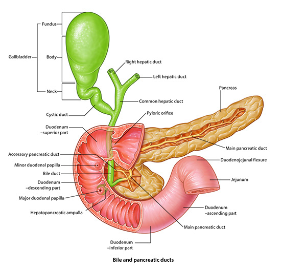

Stomach, Liver, Spleen: Module 2 - Page 7 of 7

Click on image to enlarge
Step 26
Add the
biliary system with reference to duodenum
.
Step 27
Compare this magnetic resonance cholangiopancreatography (MRCP) video image to the VH Dissector 3D image.
Rotate the 3D image to better appreciate the anatomy.
Back
Return to Lessons Index
Return to start